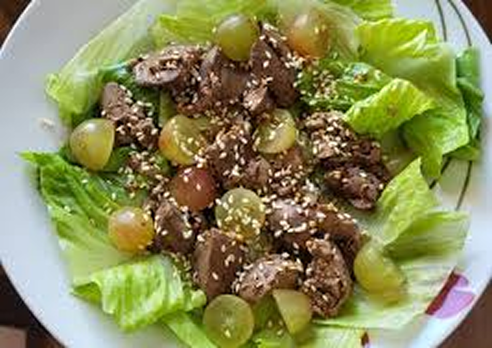
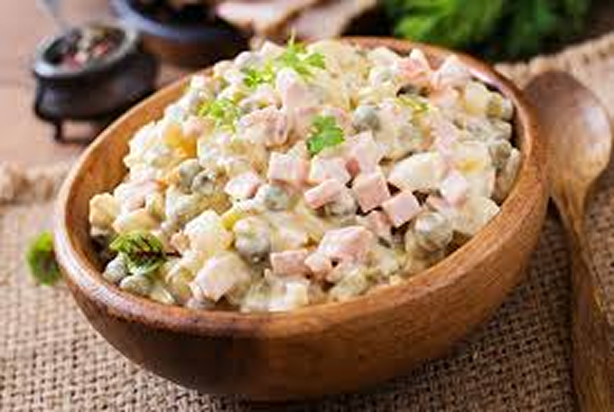

Салати
Салат курячий з виноградом

Інгредієнти
2 порції
- 250 г печінки
- 1 невелика цибулина
- 100 г (12-14 шт.) винограду
- листя салату (ромен і айсберг)
- 4 ст. л. оливкової олі
- 2 ч. л. меду
- 2 ч. л. гірчиці
- 2 ч. л. лимонного соку
- 2 ст. л. кунжуту
- Цибулю нарізати кільцями і обсмажити на середньому вогні до жовтуватого кольору. Печінку промити, розрізати на дві частини по з'єднанню і додати до цибулі.На фото печінки більше, та я розрахувала рецепт на 2 порції
- Я не смажу печінку на великому вогні, а більше тушкую, помішуючи, поки вона не пустить воду. Близько 5хв. Далі посолити, додати спеції і лавровий лист, тушкувати ще близько 5хв до готовності, іноді помішуючи.
- Листя салату порвати руками чи порізати, викласти в тарілку, додати печінку і виноград. Якщо ягоди завеликі, розрізати їх навпіл.
- Для заправки змішати оливкову олію, мед, гірчицю та сік лимона. Полити салат і посипати кунжутом.Смачного!
Цезарь
Інгредієнти
4-6 порції
- 4 шт. Яйце
- 10 шт. Помідор чері
- За смаком Крутони (сухарі)
- 2 шт. Філе курки
- За смаком Сир твердий
- Для соусу:
- 1 Жовток
- 3 ст. л. Майонез
- Листя салату(айсберг)
- Нарізати курку кубиком
- Обсмажити курку насковороді до золотистого кольору
- Сухарі робимо самостійно, ріжемо хліб на шматочки 1*1см та обсмажуємо на сухій пательні
- Змішуємо інгредієнти соусу, за смаком додаємо сіль та трохи тертого сиру. Збираємо салат
- Для заправки змішати оливкову олію, мед, гірчицю та сік лимона. Полити салат і посипати кунжутом.Смачного!
- Листя салату рвемо на невеликі частинки, змащуємо соусом, викладаємо курку та яйця, помідори, сухарі не забуваємо про соус. Зверху засипаємо тертий твердий сир. Смачного!
Олів'є

Інгредієнти
1 порція
- 300 г Куряче філе
- 4 шт. Картопля
- 3 шт. Морква
- 4 шт. Яйця
- 2 шт. кислих огірків
- 1 банка Горошок
- за смаком Сіль
- Майонезний соус
- Відварюємо картоплю, моркву, яйця
- Також відварюємо філе у підсоленій воді до готовності
- Охолоджуємо.Всі компоненти нарізаємо кубиками.
- Додаємо горошок та перемішуємо з майонезним соусом
- Готовий салат викладаємо в салатницю,та прикрашаємо петрушкою